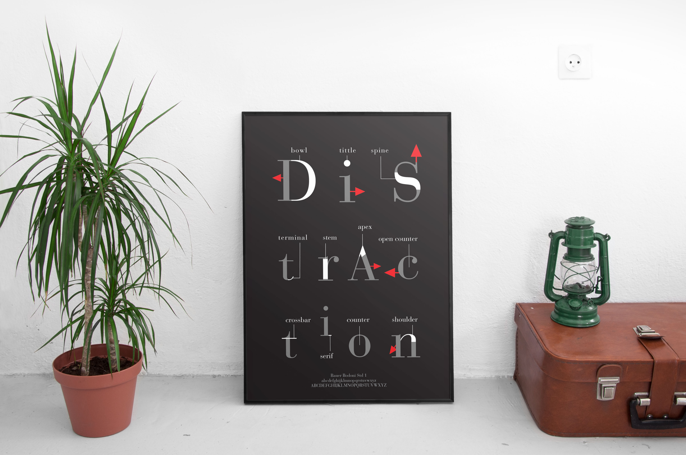

Type Anatomy
The goal of the project is to create a poster that shows the type anatomy; Besides that, the poster also need to shows the concept of distraction. In order to achieve the goal, I use red arrow because the combination of red and arrow can grab audience's attention and distract them from fucosing on main content.
